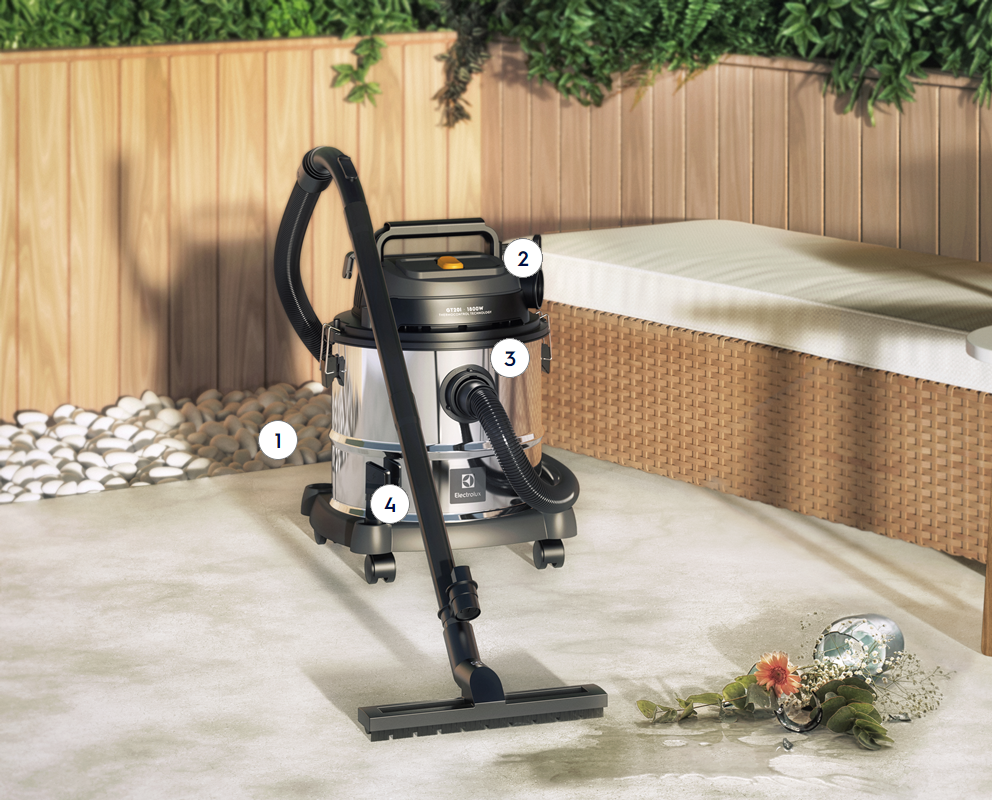
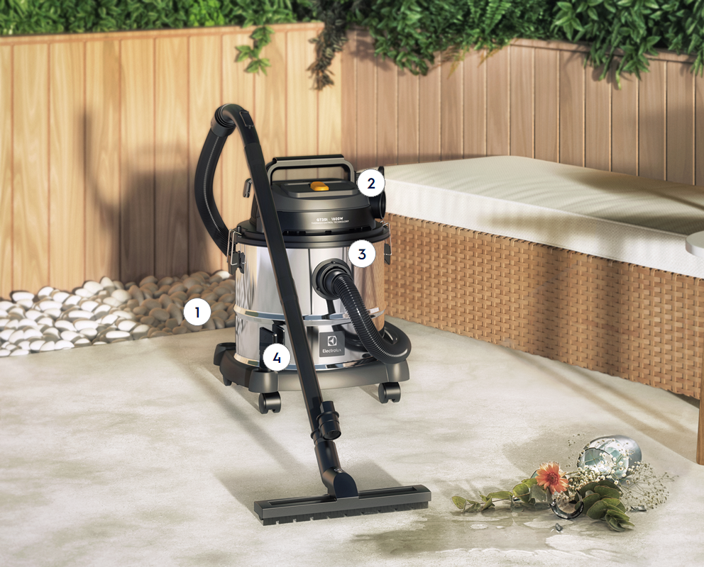

Design moderno
e resistente
Barril de Inox de 20L
Um reservatório resistente,
com design elegante e grande
capacidade para qualquer
tipo de limpeza
 



 Embalagem
Embalagem
 Especificações técnicas
Especificações técnicas